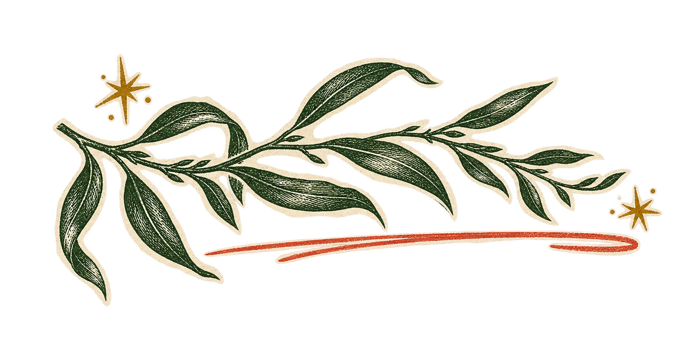
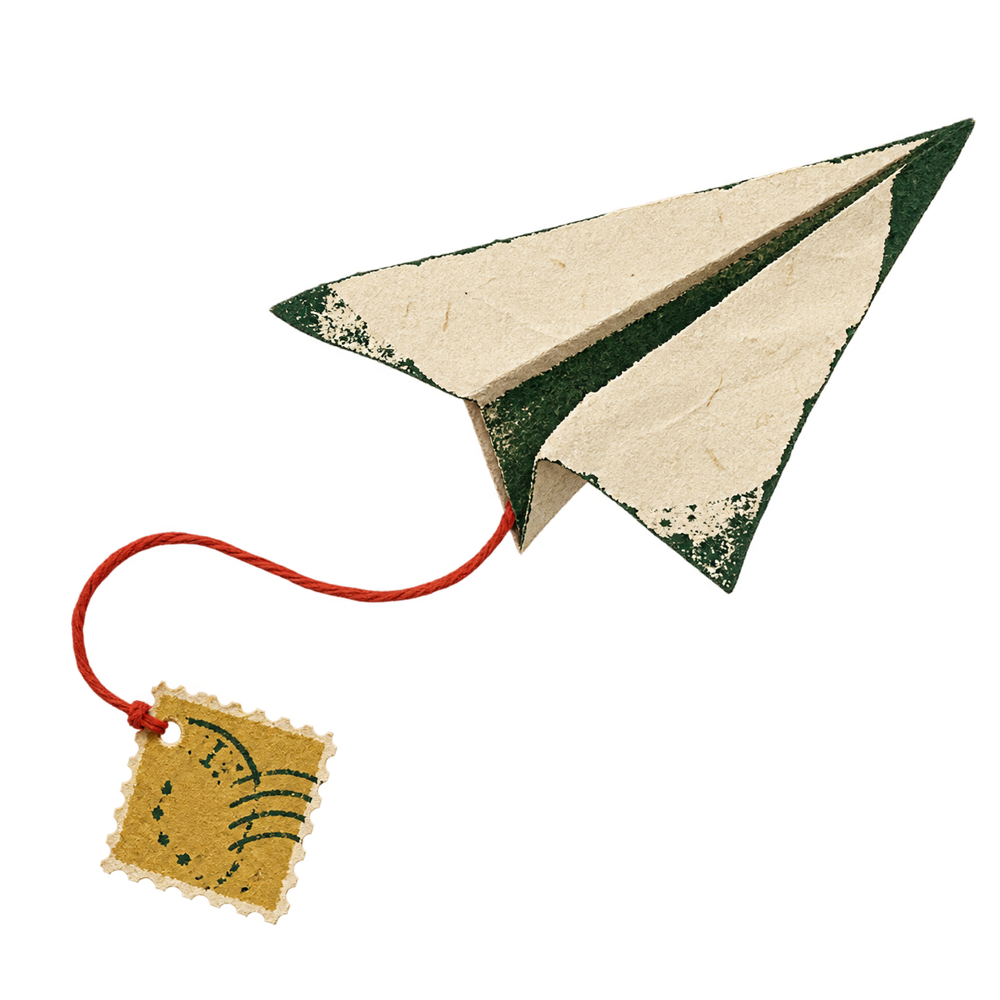
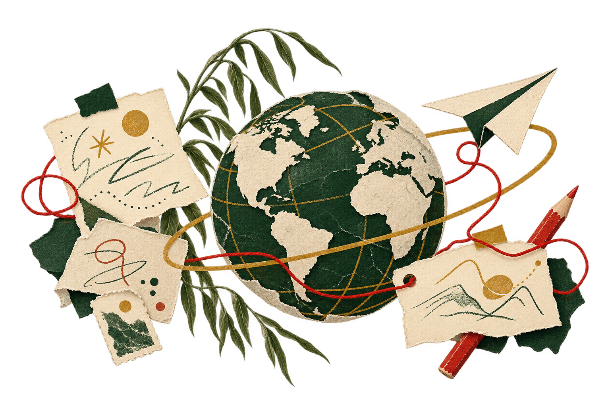

嗨，我是——胡杨柳Yolanda Hu
学翻译出身，现在做海外营销。
想让人多看一眼，也想知道为什么。
写文案、看达人，最后回到数据里找答案。
有想法，就动手试。
做完了，再多问一句为什么。
上海大学 · 英语笔译硕士
海外营销 / 跨文化表达 / AI 实践
海外营销 / 跨文化表达 / AI 实践

随便翻翻，小纸条也能点。

本人，手绘版本。这半年，有点忙两舱整合营销一张机票，
怎么让人想点开？
简历只有一页，这里可以多翻几页。
人可以松弛点。
胡杨柳的网上小据点 / 2026往下，还有几页
A FEW PAGES FROM ME简历里没展开的，
简历里没展开的，
我放这儿了。
项目、文案、实验。
没有固定阅读顺序，随你翻。
边做边想，
偶尔改稿。
偶尔改稿。
A LITTLE MORE ABOUT ME学翻译的人，
学翻译的人，
后来给机票
写起了文案。
本科和硕士都学翻译，在亚洲杯现场做过陪同口译，也在携程写文案、跟达人、盯活动链路。方向拐了个弯，关心的事倒没变：话有没有说到位，对方会怎么回应？
这条路怎么拐过来的CURRENTLY ON MY MIND最近偏爱